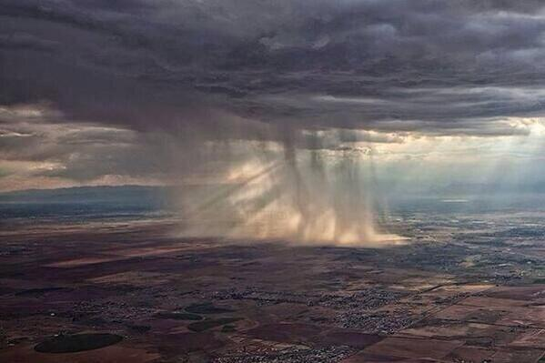

Атмосферными осадками называют воду, которая из атмосферы выпадает на земную поверхность. Атмосферные осадки имеют и более научное название — гидрометеоры. Измеряют их в миллиметрах. Для этого замеряют толщу воды, выпавшей на поверхность с помощью специальных приборов — осадкомеров. Если нужно измерить толщу воды на больших площадях, то используют метеорологические радиолокаторы.
В среднем наша Земля получает почти 1000 мм осадков ежегодно. Но вполне предсказуемо, что их количество выпавшей влаги зависит от многих условий: климата и режима погоды, рельефа местности и близости водоемов. Виды атмосферных осадков

Вода из атмосферы выпадает на земную поверхность, находясь в двух своих состояниях — жидком и твердом. По этому принципу все атмосферные осадки принято делить на жидкие (дождь и роса) и твердые (град, иней и снег). Рассмотрим каждый из этих видов подробнее.
Жидкие атмосферные осадки
Испаряясь с поверхности земли, вода в атмосфере собирается в облака, которые состоят из мельчайших капель, размерами от 0,05 до 0,1 мм. Эти миниатюрные капельки в облаках с течением времени сливаются друг с другом, становясь все больше в размерах и заметно тяжелее. Визуально данный процесс можно наблюдать, когда белоснежное облако начинает темнеть и тяжелеть. Когда таких капель в туче становится слишком много, они проливаются на землю в виде дождя. Летом дождь идет в виде крупных капель. Крупными они остаются потому, что нагретый воздух поднимается от земли. Вот эти восходящие струи и не дают каплям разбиваться в более мелкие. Зато весной и осенью воздух намного прохладнее, поэтому в эти времена года дожди — моросящие. Причем, если дождь идет из слоистых облаков, его называют обложным, а если капли начинают падать из кунево-дождевых, то дождь превращается в ливень. Ежегодно в виде дождя на нашу планету проливается почти 1 млрд. тонн воды. В отдельную категорию стоит выделить морось. Этот вид осадков также выпадает из слоистых облаков, но капли ее настолько малы, а их скорость настолько ничтожна, что капельки воды кажутся подвешенными в воздухе.
Роса
Еще один вид жидких осадков, который выпадает в ночное время или рано утром. Капельки росы образуются из водяного пара. За ночь этот пар остывает, и вода из газообразного состояния превращается в жидкое. Самые благоприятные условия для образования росы: ясная погода, теплый воздух.Твердые атмосферные осадки Твердые осадки мы можем наблюдать в холодное время года, когда воздух охлаждается до такой степени, что капельки воды, находящиеся в воздухе, замерзают.
Снег
Снег также как и дождь, образуется в облаке. Затем, когда облако попадает в поток воздуха, в котором температура ниже 0°С, капельки воды в нем замерзают, становятся тяжелыми и выпадают на землю в виде снега. Каждая капелька застывает в виде своеобразного кристаллика. Ученые утверждают, что все снежинки имеют разную форму и найти одинаковые просто невозможно. Кстати, снежинки падают очень медленно, так как почти на 95% состоят из воздуха. По этой же причине они белого цвета. А хрустит снег под ногами потому, что ломаются кристаллики. И наш слух способен уловить этот звук. Зато для рыб настоящее мучение, так как снежинки, падающие на воду, издают высокочастотный звук, который рыбы слышат.Град
выпадает только в теплое время года, особенно, если накануне было очень жарко и душно. Прогретый воздух сильными потоками устремляется вверх, унося с собой испарившуюся воду. Образуются тяжелые кучевые облака. Затем, под воздействием восходящих потоков капельки воды в них тяжелеют, начинают замерзать и обрастать кристаллами. Вот эти комочки кристаллов и устремляются на землю, по пути увеличиваясь в размерах за счет слияния с каплями переохлажденной воды в атмосфере. Нужно учитывать, что такие ледяные "снежки" устремляются на землю с невероятно быстротой, а потому град способен пробить шифер или стекло. Град наносит большой урон сельскому хозяйству, поэтому самые "опасные" тучи, которые готовы разразиться градом, разгоняют с помощью специальных пушек.
, как и роса, образуется из водяного пара. Но в зимние и осенние месяцы, когда уже достаточно холодно, капельки воды замерзают и потому выпадают в виде тонкого слоя ледяных кристаллов. А не тают они потому, что земля остывает еще больше.
В тропиках и очень редко в умеренных широтах наступает такое время года, когда выпадает непомерно большое количество осадков. Этот период называют сезоном дождей. В странах, которые расположены в этих широтах, не бывает суровых зим. Зато весна, лето и осень стоят неимоверно жаркие. За этот жаркий период накапливается огромное количество влаги в атмосфере, которая и выливается затем в виде затяжных дождей. В зоне экватора сезон дождей наступает два раза в год. А в тропическом поясе, южнее и севернее экватора, такой сезон случается лишь один раз в году. Связано это с тем, что пояс дождей постепенно курсирует с юга на север и обратно.

Как связаться номер телефона: +7 937 402 73 42
электронная почта: viktorias0880@gmail.com